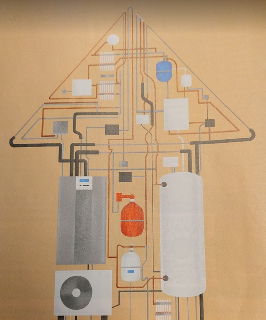

Luchtverwarming
28 May, 2024
Een symbolisch plaatje: een huis gevuld met een zeer complexe installatie. En ja luchtverwarming is al een complexe zaak en verduurzaming van luchtverwarming is nog complexer. |  |
Luchtverwarming heeft een aantal typerende kenmerken:
- Verwarming reageert heel snel op de ingestelde warmtevraag
- Verwarming kan daardoor ook zuiniger dan bijvoorbeeld radiator verwarming opereren
- Verwarmingsinstallatie heeft meestal ook een ventilatiefunctie (bijmengen van verse lucht)
- Vaak is de bijmenging van verse lucht veel te groot, waardoor veel onnodige energie verloren gaat
- Bewoners weten vaak niet waar die klep voor de buitenlucht zit en hoe die moet worden ingesteld
- Kruipruimte wordt soms als retour kanaal gebruikt
- Daardoor werkt de installatie ook als lichte vloerverwarming
- En daardoor is niet goed bekend hoe je nu de kruipruimte/vloer moet isoleren
- Bewoners zijn zich vaak niet bewust hoe de luchtstroom in huis is. Vaak is deze verstoord door interne verbouwingen
- De installatie is heel geschikt om natuurlijke nachtkoeling in de zomer te verzorgen
- Veel bewoners weten niet hoe ze die nachtkoeling kunnen inschakelen
- Luchtverwarming is moeilijk te verduurzamen
- Vaak ook een hoog elektriciteitsverbruik door langdurig aan staan van oude AC-ventilator.
Advies voor uw huidige installatie
Uit onze bezoeken aan en metingen in bestaande woningen, concluderen wij dat het hoe dan ook verstandig is om uw huidige situatie:
- De luchtverwarming luchtzijdig te laten inregelen
- Op de juiste wijze vloerisolatie te laten aanbrengen
Dit zal u in het algemeen een beter comfort geven en een (soms fors) lagere energierekening.
Onderhoud
Uit onze ervaringen komt ook dat het onderhoud van de luchtverwarming niet bekend is: Ten minste 1 keer per jaar dienen de filters te worden vervangen.
Om de 3 tot 5 jaar dienen de luchtkanalen geïnspecteerd te worden en zo nodig te worden gereinigd.
.